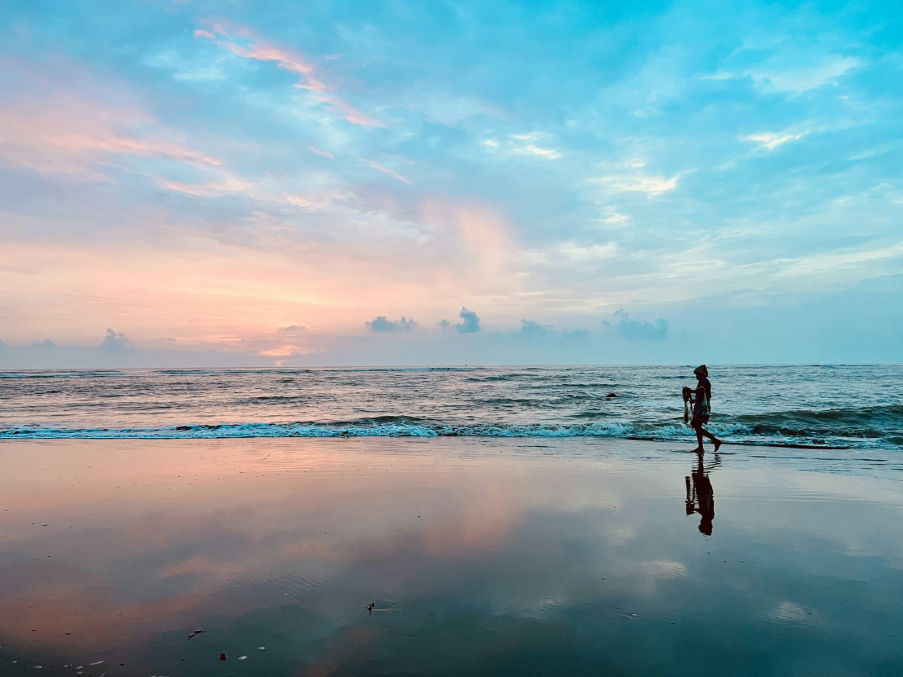

Saint Martin's Island • Bangladesh
Saint Martin: Where the Sea First Taught Me That the World Is Bigger Than Humanity

Finding Saint Martin on the map of Bangladesh is easy. It rests in the country's southernmost corner—a tiny coral island floating in the blue waters of the Bay of Bengal. But the little dot you see on a map hardly prepares you for the reality. Reaching it feels less like arriving at a destination and more like stepping into another world.
To me, traveling has never been about simply visiting a place. I believe that to truly know a destination, you have to walk its paths, breathe its air, listen to the voices of its people, and embrace its silence. That is why Saint Martin is more than just an island to me. It is a memory that returns with the taste of salty sea breeze every time I think about it.
From the moment I left Dhaka, I felt as though I was slowly leaving my familiar world behind. The concrete walls, endless traffic, and restless rhythm of the city gradually faded into the distance. In their place appeared endless green fields, winding rivers, bustling roadside markets, and quiet villages. One of my greatest joys while traveling is simply looking out of the window. Long before reaching the destination, the journey itself becomes part of the adventure.
When I finally arrived in Teknaf, I knew the real expedition was about to begin.
The morning light was slowly spreading across the sea. People gathered at the jetty, fishermen busied themselves with their work, boats drifted quietly in the distance, and the salty breeze carried the scent of the ocean. It felt like the opening scene of a beautifully crafted travel documentary.
Then our trawler set sail.
From afar, the sea often looks calm. But it speaks a language of its own—a language that is not always gentle.
As the trawler left the shore and moved toward deeper waters, everything seemed peaceful at first. Before long, however, the waves began to grow. With every swell, the boat climbed high into the air, only to plunge down again moments later. Everywhere I looked, there was nothing but water. The land had completely disappeared from sight.

It was in that moment that I truly understood how small we are before the sea.
Each crashing wave against the side of the trawler stirred something deep inside me. There was fear, certainly—but woven into that fear was an overwhelming sense of wonder. It was as if nature itself was whispering:
"You came here to admire me. Now learn to respect my power as well."
Many passengers looked uneasy. Some sat silently, while others stared into the endless horizon. I found myself trying to preserve every single moment in my memory, knowing that one day these memories would return as stories waiting to be told.
Eventually, a thin green line appeared on the horizon.
That was Saint Martin.
As we drew closer, the sea transformed before my eyes. The deep blue gradually melted into brilliant turquoise, then into crystal-clear shades of emerald and aqua. I could even see tiny fish swimming beneath the boat.
The first thing that captivated me after stepping onto the island was its silence.
There were no horns echoing through busy streets. No towering buildings casting long shadows. Only the rhythm of the waves, the gentle whisper of wind through coconut palms, and the distant flight of white seabirds.
Many people see Saint Martin as nothing more than a beach destination.
To me, it felt like a living island.
Life here is inseparable from the sea. Long before sunrise, fishermen head out into the water. As daylight arrives, the markets fill with rows of freshly caught fish. Small family-run stalls welcome travelers with fresh coconuts, seafood, dried fish, and local delicacies.
The people of the island possess a quiet simplicity. Their lives may not be filled with luxury, but their lifelong bond with the sea is a richness far greater than material comfort.
Standing on the coral rocks and watching the waves roll endlessly toward the shore, I felt as though the world had slowed down for a while.
Here, time is not measured by the hands of a clock.
Here, time flows with the rhythm of the tides.
As afternoon faded into evening, the sunlight turned golden. The western sky slowly painted itself in brilliant shades of orange, crimson, and violet. Reflected upon the sea, those colors created a scene that felt almost unreal.
At that moment, one thought quietly settled in my mind:
Humanity is not the greatest creation on Earth. Nature is the greatest artist.
When night finally embraced Saint Martin, the island revealed yet another face. Apart from the distant sound of waves, there was almost complete silence. Above stretched an endless sky filled with countless stars. Free from the glow of city lights, the heavens appeared clearer than I had ever seen them before.
I sat facing the sea for a long time.
There was nowhere I needed to be.
Nothing demanding my attention.
Only the sea—and me.
When it was finally time to leave the island, I felt as though I wasn't simply returning from a place.
I was carrying a piece of the sea home with me.
Even today, whenever I look at Saint Martin on a map, I no longer see just an island.
I hear the distant hum of the trawler's engine.
I can almost feel the salty breeze against my face.
I remember those towering waves that frightened me—and, at the same time, taught me humility.
There will be many beautiful places waiting to be discovered in this world.
But some places are never meant to remain only in our photographs or our memories.
They quietly become a permanent part of who we are.
For me, Saint Martin is one of those places.